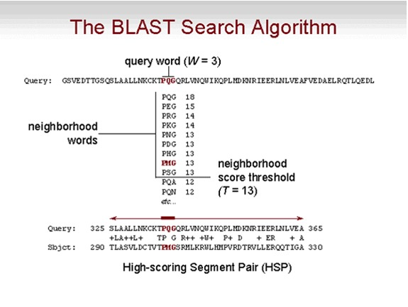
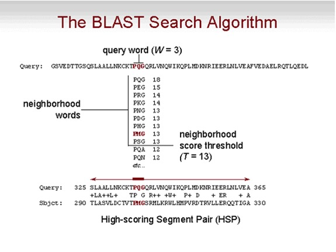

Herraminetas de NCBI#
The National Center for Biotechnology Information (NCBI), https://ncbi.nlm.nih.gov/, es una de las colecciones de bases de datos mas importantes. Contiene secuencias de DNA, proteínas, datos taxonómicos, publicaciones etc.
Búsqueda de secuencias#
Escoja la base de datos “Protein” y escriba en la barra “Cytochrome B Homo sapiens neanderthalensis”. Escoja la proteína de referencia (RefSeq Proteins) y copie el ID de esta proteína
Por explorador#
Primero vamos a explorar la base de datos de NCBI con “clicks” y después los haremos desde un script de python. Entre a https://www.ncbi.nlm.nih.gov/ y despliegue la pestaña “All Databases” para ver las opciones.
Desde script de python#
Ahora vamos a realizar la búsqueda por ID desde python
#!/usr/local/bin/
# Script por Laura Salazar Jaramillo
# Busca la secuencia de proteinas del citocromo B de neanderthales
from Bio import Entrez
from Bio import SeqIO
Entrez.email = "laura.salazar38@eia.edu.co"
with Entrez.efetch(
db="protein", rettype="fasta", retmode="text", id="YP_002124314.2") as handle:
seq_record = SeqIO.read(handle, "fasta")
print(seq_record)
SeqIO.write(seq_record, "hsneanderthal_cytb_prot.fa", "fasta")
Búsqueda por similitud molecular#
La búsqueda de similitudes es un primer paso para encontrar información útil sobre funcionalidad y/o ancestría. A la hora de buscar similitud en bases de datos extensas, los algoritmos de programación dinámica (como Needleman-Wunsch y Smith-Waterman) son ineficientes. Las herramientas mas eficientes son heurísticas: “atajos” algoritmicos que no producen una solición óptima global, pero que son mucho más rápidos y eficientes. Ahora vamos a realizar la búsqueda de las secuencias mas similares de todas las disponibles en la base de datos usando Basic Local Alignment Search Tool, BLAST (Altschul et al. 1997; Altschul et al. 1990)
Repaso de conceptos clave de similitud#
Secuencias homólogas: similitud por ancestría común
Alineamiento global vs local: ordenamiento de secuencias según similitud. Global: utiliza toda la secuencia. Local: utiliza los fragmentos más similares
Secuencias conservadas: aquellas que comparten nucleótidos o aminoacidos en la misma posición (opuesto en divergentes)
Score: parámetro que indica la calidad del alineamiento
Dendograma (Cladograma): hipótesis sobre relación evolutiva de secuencias
Basic Local Alignment Search Tool (BLAST)#
Dada una o mas secuencias problema query (usualmente en formato FASTA), BLAST busca regionse de apareamiento de secuencias (match) en un grupo de secuencias (una base de datos).
Antes de realizar una búsqueda en BLAST, se genera un índice que consiste de palabras de una longitud k, las cuales se denominan k-mers. Éste índice se almacena en la memoria RAM del computador, así que BLAST puede ser muy rápido buscando estas palabras. Para inciar una búsqueda por similitud, el algoritmo de BLAST primero busca en la secuencia consulta (query). usando la base de datos indexada, las secuencias que contengan un score alto de k-mers son escogidas. De allí se realiza un alineamiento local alreadedor de estos k-mers.
 
Tipos de BLAST#
De acuerdo a la búsqueda que necesitemos hay diferentes tipos de blast:
blastn: búsqueda de nucleótidos en base de datos de nucleótidos
blastp: búsqueda de proteína en base de datos de proteínas
blastx: búsqueda de nucleótidos en base de datos de proteínas, traduciendo la secuencia query en diferentes marcos de lectura
tblastn: búsqueda de proteínas en base de datos de nucleótidos, traduciendo los hit en diferentes marcos de lectura
tblastx: búsqueda de nucleótidos en base de datos de nucleótidos, traduciendo query y hit en diferentes marcos de lectura
psiblast: Position Specific Iterated-BLAST (PSI-BLAST) es basado en blastp pero utiliza los perfiles de conservación para hallar secuencias distantemente relacionadas

E-value (Expectation-values)#
Cuando realizamos una búsqueda por similitud, es importante identificar si la secuencia target es significativamente similar a la query. En este caso la significancia significa que el score del alineamiento (S) es mayor que uno esperado al azar. Un hit siempre va a tener algún tipo de similitud, y la probabilidad de encontrar un score alto aumenta con una secuencia query mas larga (m) y/o una base de datos mas grande (n). Para cuantificar la significancia de un hit, calculamos el E-value (E), que representa el número de hits esperados con un score mínimo de S, usando una secuencia query de longitud m, y una búsqueda aleatoria en una base de datos n (\(\lamda\) y K son parámetros para escalar y normalizar la base de datos y valores E):
Algunas reglas no formales (“rules of thumb”) que pueden servir como guía para considerar la significancia de los hit:
\(E-value < 10e^{-100}\) Secuencias idénticas. Esperarías un alineamiento largo y completo entre la secuencia de consulta y hit
\(10e^{-50} < E-value < 10e^{-100}\) Secuencias casi idénticas. Esperarías un fragmento largo de alineamiento entre la secuencia de consulta y hit
\(10e^{-10} < E-value < 10e^{-50}\) Secuencias cercanas o un dominio
\(1 < E-value < 10e^{-6}\) Podría ser un homólogo, pero es un área gris
\(E-value > 1\) Las proteínas probablemente no están relacionados
\(E-value > 10\) Los hits son irrelevantes o la secuencia consulta muy pequeña
Búsqueda de BLAST en la web#
Entre a https://blast.ncbi.nlm.nih.gov/Blast.cgi. Allí verá las diferentes opciones de BLAST. Vamos a buscar las proteínas homólogas al citocromo B de H. neanderthalensis que descargamos.
Entre a https://blast.ncbi.nlm.nih.gov/Blast.cgi y escoja la opción “Protein Blast” (porque nuestra secuencia es una proteína)
En la casilla en blanco pegue el fragmento de la secuencia descargada del Citocromo B de H. sapiens neanderthalensis
Deje los parámetros por defecto y de click en “BLAST”.
El resultado tabular que aparece lista los mejores hits (de toda la base de datos, si no hubo filtros)
En la pestaña “Graphic Summary” verá una representación gráfica del alineamiento, donde el color rojo muestra los matches
En la pestaña “Alignment” encontrará el alineamiento de la secuencia query (la que nosotros escogimos) con los mejores hits y la información del alineamiento